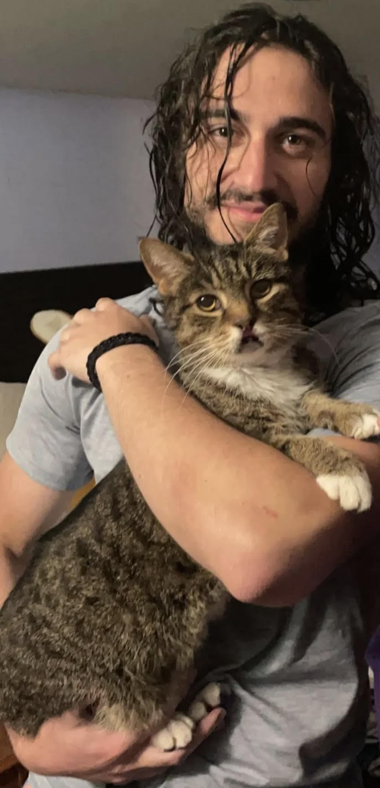

All About Lennie Marino
Hello my name is Lennie Marino and I am 23 years old. Most of my life I spent my time gaming. It's what I love to do and I will never stop. At a young age I always loved to compete. I also loved playing soccer and played in a league for 12 years. Most of my competeing years were in gaming and soccer. It's how I expressed myself. To this day i dont play much soccer but gaming is always there. I recently decided to put down the controller and pursuit a career. My furthest education is highschool, but I wanted to do more with my life. Thats how I eneded up at New England tech to be a better version of myself.
